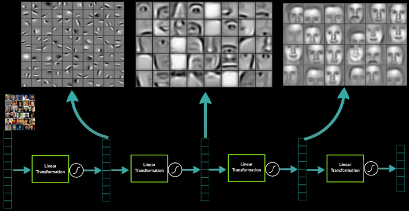

Deep learning with

Machine learning
Learning from data without being
explicitly programmed
- Linear regression
- Logistic regression
- Decision trees
- Artificial neural networks
- And much more...
Linear regression
Predicting continuous values with linear weights
Logistic regression
Classification with linear weights
Orange dot Green dotDecision trees
Predictions by splitting data in multiple steps
What do people think of the weather?
Raining?
yes
no
Bad
Temp > -10℃?
yes
no
Bad
Snowing?
yes
no
Good
Temp > 15℃?
yes
no
Bad
Good
Artificial neural networks
Multi layered networks that can learn nonlinear functions
Input layer Hidden layer Output layer
Deep learning
Artificial neural networks with many layers
Input layer Hidden layers Output layer
Features at multiple levels of abstraction

Use cases include
- Speech recognition
- Image recognition
- Image captioning
- Natural language processing
- Recommendation systems
- Text generation